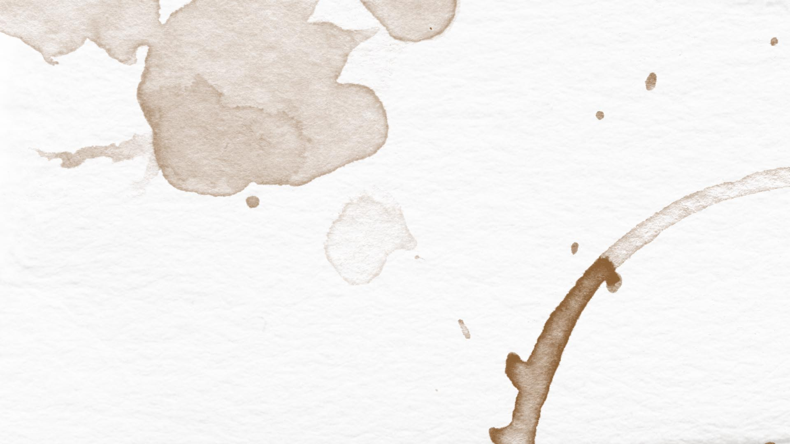
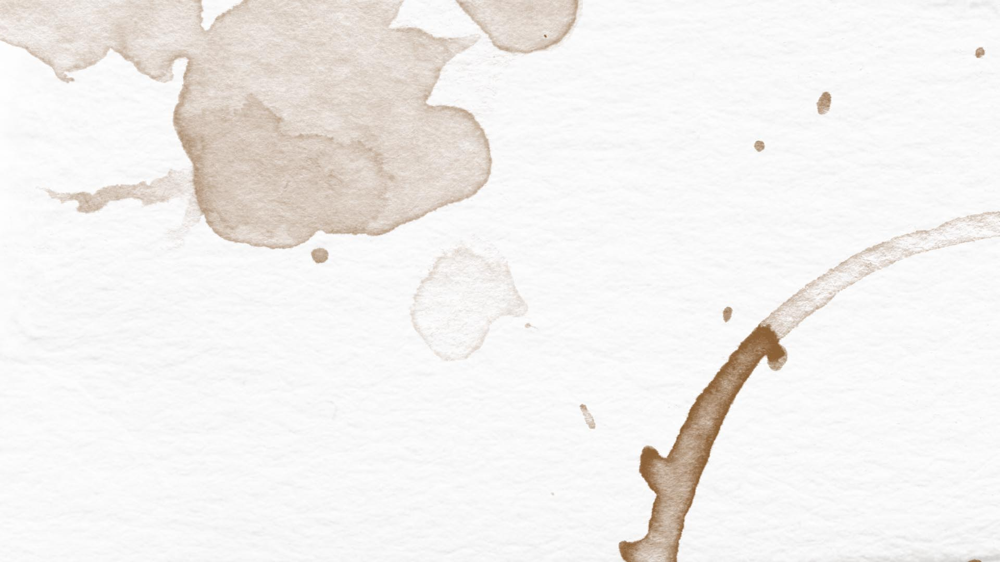

My name is Michaela Stone Cross, and no, 'Michaela' is not pronounced how you think (try mick-I-luh.) I'm an artist (read: writer, illustrator) from Philadelphia (read: best city I'm never living in) and making my way as a freelancer trying to get into investigative journalism (the justice system, silencing of women, politics, etc.) I'm living in Los Angeles where I'm building my launchpad into Reality (as opposed to the University of Chicago, where I just graduated in South Asian Studies) amd writing my novel.
So far I've written about sexual violence abroad (like my CNN article which got a zillion hits) and at home (like this article about college campus sexual assult culture) travel (doing random things insanely cheaply), politics (particularly electoral), and my adventures (like finding a cabin in Latvia on the internet and living there for three weeks.) Mostly it's my feminist stuff that's gotten the most attention, but I'm not going to let myself get stuck in a niche. My goal is to give a voice to perspectives that don't get enough press, whether they are those of women or anyone else.
Besides nonfiction, I've made a graphic short story collection, written a play, built this website, and am writing a novel about the culture of college women who get sexually assaulted and then locked in psych wards for going crazy after it happens (which, believe it or not, is supposed to be funny.) I maintain a blog, am learning Hindi, and am reading a lot of American history books. Life is too short to be one thing: so explore my website to see what I do.
about 'this is real this is fiction'
PS. I call my website 'this is real this is fiction' because I'm both a fiction and a nonfiction writer. Like I said, I value my journalism and my fiction equally, and my nonfiction feeds my fiction. As a writer I feel very strongly that I should be connected viscerally to the real world and not just the ones I make up in my head. This is why I didn't major in creative writing, didn't apply for an MFA program, and have no plans of living off of academia in the near future. My website is a way of representing all that I do in one space.